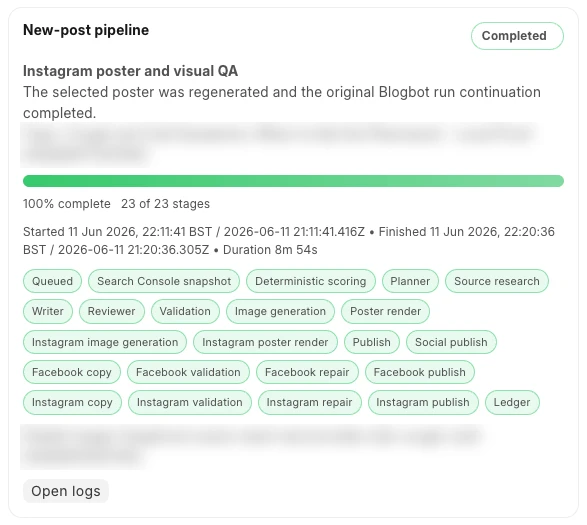
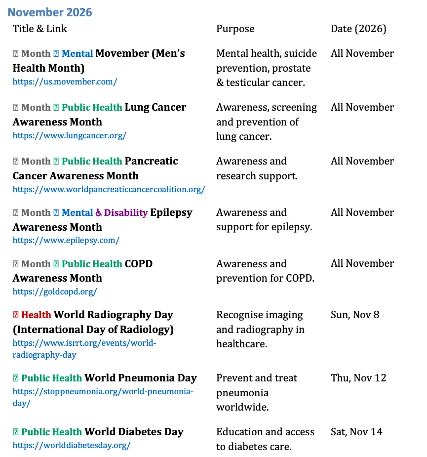
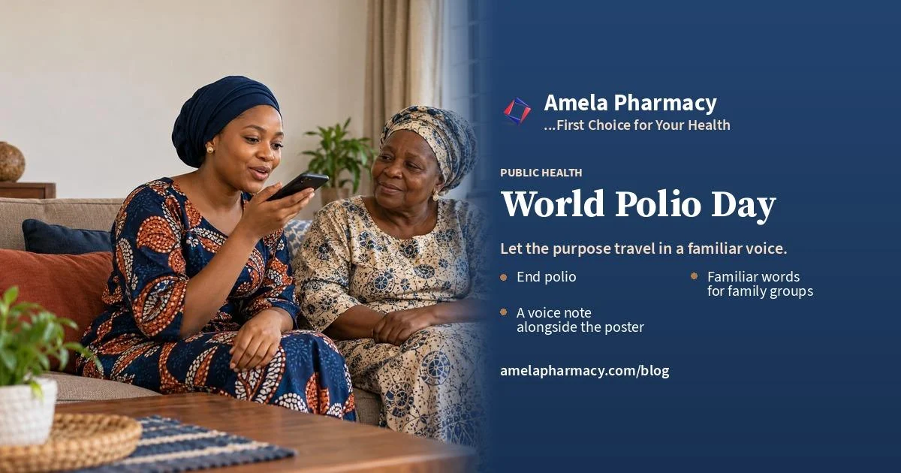
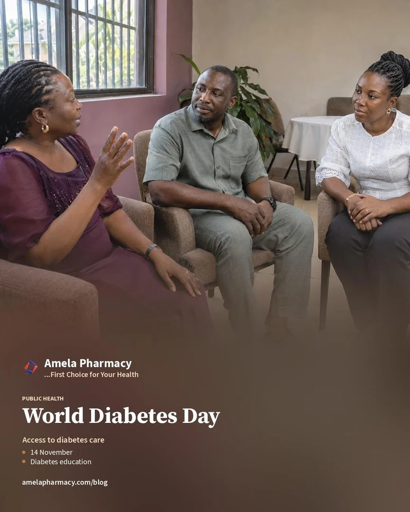
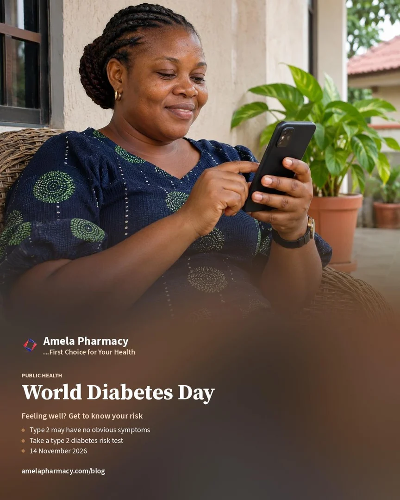

I Automated Our Pharmacy’s Blog and Health Awareness Posts. The Captions Kept Going Wrong
In January, I wrote a script that would write a new article for our pharmacy’s blog every three days. We didn’t have the time or the resources to hire a blogger, so I wanted to automate it.
It was a 336-line shell script that called the Codex CLI with one prompt. The prompt asked for exactly one new post per run. It picked a topic from search trends and health news, with Nigeria first, wrote the article under the same headings every time (“Myth vs Fact”, “What to do (checklist)”, “When to seek urgent help”, “Final word”) and published it straight to the live blog.
Within a couple of days the articles were telling readers that the topic was trending. That’s probably the last thing you want to hear from your pharmacist. So I added a list of banned phrases (“trending”, “Google Trends”, “people are searching”, “going viral”), a list of sources it was allowed to use, like the NCDC, WHO, NHS and NAFDAC, and switched the cover images from vector art to realistic photos. A few weeks later I stopped it publishing straight to the live blog and gave it a draft queue instead.
One prompt was doing too much
It kept going like that until spring, when a run failed because the article came out at 231 words and the target was 390, give or take 100. The article was about buying antibiotics for toothache.
The trouble was that one prompt was doing everything. It was choosing the topic, finding the sources and writing the article, while also keeping to a word count and the same fixed headings.
So I split it up. A run now has a planner, a research step, a writer, a reviewer and a repair step, and each one is a single Codex call with a single job. The planner gets told what the blog is for: “The blog is a pharmacy advice channel, not an advert stream.” Topics come from the searches that already bring people to our site, and a ledger of past topics stops it repeating itself. About 1,200 lines of shell went in the process.
The research step has to open every source itself and hand back a map of which medical claim came from which page. The code then checks that each page was opened, that it has a date that isn’t in the future, and that every claim maps to a source it knows about. The reviewer can block an article, and if the repairs don’t fix it, it waits for a person.
Not long after, I added social posts, so each new article also went out as a poster on Facebook and Instagram. A full local run, social posts included, took about 33 minutes.

The health observance calendar
I also added a second source of posts: health awareness days. World Polio Day, World Pneumonia Day, World Diabetes Day, that sort of thing.
The list came from one 17-page PDF, a calendar of health, disability and wellbeing observances for 2026, with a table for each month and 164 links. It was published by the Cayman Islands' National Council for Persons with Disabilities, which is why it ended with the Cayman Islands' public holidays. I decided not to build an importer for it. The records were kept by hand instead, each with a title, a date, a one-line purpose, a source link and a status. World Polio Day, for example, has the purpose “End polio.”

A nightly job turns each day that’s coming up into social posts, with no blog article behind them. It shipped paused and in dry run, so I could see what it would post before it posted anything. A few weeks later, posts on sensitive subjects, things like HIV, pregnancy, children and mental health, started waiting for me before they went out.
Posters, and who gets to write the words
I wanted all of this to look like a person was running it, with a human tone and a human spread of topics. That was hardest on the posters.
The people in the photos drifted towards the same stock-photo faces, so I had to tell it they should look like the people we serve in Nigeria. The AI checker, which had been told to reject any photo with text in it, rejected a photo of a medicine box, because medicine boxes have text on them. One poster had a made-up logo on someone’s lab coat. Another got held back because the footer had less than “the required 32 px breathing room”.
So I changed who owns what on a poster. The model generates the photo, with no text or logo in it, and suggests the direction. The code draws the title, the points, our logo and the footer, at exact sizes, margins and contrast. Then an AI check looks at the finished poster.
That fixed most of the failures, but it made the posters monotonous, because every one had its text in the same place at the bottom. I’d wanted them creative and varied, the way a human designer would do it, so I approved four extra Instagram layouts. The variety brought the brittleness straight back.
That came to a head in November. Nothing had posted for a week, for reasons that had nothing to do with layouts: a stuck item had stopped the nightly batch, and Blogbot’s Codex login had expired, because production was using a copy of the one on my Mac. That night I wrote that there was “no point having the most beautiful picture if it isn’t reliable”. When a live post came out in the framed-card layout the next day, I said I didn’t want it any more. The extra layouts went, and every poster went back to one layout.
October got brittle
By the autumn, articles were publishing on their own again, posts were going to LinkedIn too, and I’d asked for the whole thing to be fully automatic. I didn’t want to have to interact with it at all.
One evening a topic about TB in the household was thrown out because the word “family” matched four dental products with Family in the brand name. Every time something had gone wrong, a new check had gone in, and a lot of those checks were matching words. I’d asked that same day whether we were overcomplicating it, and I asked it to “make sure we fix the underlying patterns, not just add exceptions for these examples.”
The checks also changed what counted as working. A run “stopped safely” after 14 minutes having made nothing. The whole idea was that it never failed, and now a failure had become an acceptable result. I started asking whether we needed a state machine, and why it had been so difficult.
That’s why I moved the work of building it from Codex to Claude, with the goal of a less brittle system. The runs themselves still use Codex. I also didn’t bring back the humaniser, a step that rewrote text to sound more human, because I thought it was probably causing problems of its own. The overbuilding didn’t go away overnight, though. When a fix for Facebook posting started turning into a whole new screen, I wrote, “Mate ... why is it making a whole UI for this? and wasting tokens, is that the KISS fix?” KISS, if you haven’t come across it, is “keep it simple, stupid”.
World Polio Day
When World Polio Day came round, the post went out on its own, and it was bad.
The record only had two words of facts in it: “End polio.” The caption prompt told the writer to connect the day’s purpose to a “communication, inclusion, or everyday-care consideration” and to “frame it as an editorial recommendation”. The Facebook caption recommended sending a short voice note. The LinkedIn one suggested adding alt text describing the scene. The poster said “Let the purpose travel in a familiar voice”, with points like “A voice note alongside the poster”. It was approved automatically, using the writer’s own scores, because that’s how I’d set it up.

I wrote at the time that it was sloppy, that it read like leftover text from a system prompt, and that it was embarrassing. I deleted and archived the posts fairly quickly. We were supposed to be making fun, lively but professional captions with a human touch, and the human touch was the important part.
A caption reviewer was built the same day. I wanted a full local test with live posting switched off before it went anywhere near production, and that test never finished. There wasn’t enough memory to run it, Codex hit 99% of its weekly limit, and one test ran for seven hours, which should never have been the case. My rule about testing first kept it out of production, and the pull request sat open for nearly three weeks without anyone noticing it hadn’t merged.
World Pneumonia Day
In the meantime I’d changed what fully automatic meant. After one stuck post stopped the whole nightly batch for a week, I decided some things should wait for me, as long as I knew about them. So now a held post sends me an email and goes in a list called “Needs your approval”.
On World Pneumonia Day an item came in that needed approval but had no Approve button. Once that was fixed I pressed Approve, with no preview to check first, and a few minutes later the posts were on Facebook and LinkedIn with the same kind of caption as Polio Day. I deleted them, typed “how do I stop it? stop it for me”, and it was paused a minute later.
That’s when I found out the caption check I thought we had was never shipped. All eight observance posts in the queue had the same fault. The captions for blog articles were fine, because those are written from the article. I said yes, build it, and the new reviewer rejected all eight bad captions and passed three clean ones. It went live that night.
One line of facts
The captions that got through the new check were safe, but flat, like “12 November is World Pneumonia Day. The aim is to prevent and treat pneumonia.” When four came to me the next morning, I didn’t approve them. When we generated a batch of sample captions to see what was going on, 9 of 21 ended by asking the reader to “take a little time to learn” about the illness.
That was the same cause as Polio Day. For an awareness day the writer only got a title, a date and one line of purpose. With one sentence of facts it either padded it out with advice about sharing the post, or it said almost nothing.
So now the pipeline reads the day’s official page. It keeps an excerpt of up to 3,000 characters, the writer has to hand back the quotes it used, and the reviewer rejects any fact that isn’t on the page.
Reading the official pages also showed up mistakes in our own calendar. Our record had World Prematurity Day two days late, because its date changes from this year, and WHO’s antimicrobial resistance awareness week a day early. One source link was dead. That was in the week of records we checked, with about 160 records still to go.


After the change, none of the 21 sample captions ended on that line, and 14 of 18 passed all six of the checks we score them on. Some are still weak. All three World Diabetes Day captions open by asking whether you’re feeling well, and a World Toilet Day one reads like policy.
Where I’m at with it now
The blog side is in good shape. Its newest article went out this week with its social posts, every claim traced back to a source, and it all runs on the ChatGPT subscription I already pay for with Codex.
The awareness-day posts now have a reviewer and the official page behind them. Social posting is paused while that settles in, and each caption gets checked by eye before anything goes back out.
Next I want the logins to renew themselves. The Meta token, the LinkedIn token and the Codex login have each stopped posting at least once, and I’d like to stop having to remember them.
After that I want to check the other 160 or so calendar records against their official pages. Each time a caption went wrong we’d added another check on the writing, when the writer only ever had one line to go on. World Polio Day comes round again next October, and by then the writer will have a lot more to go on than “End polio.”